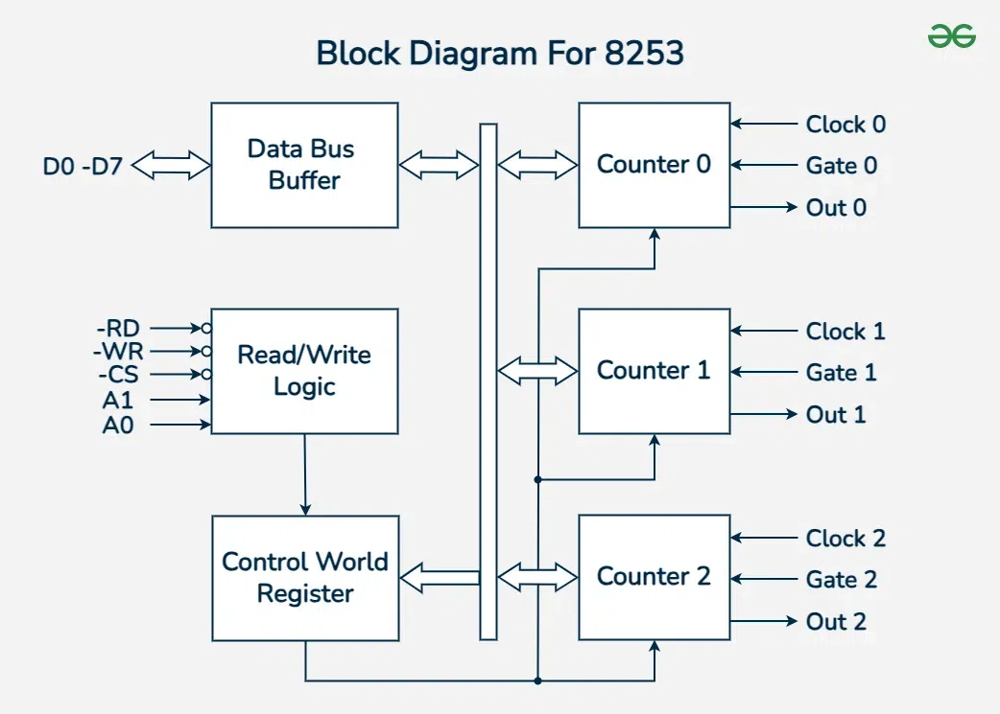
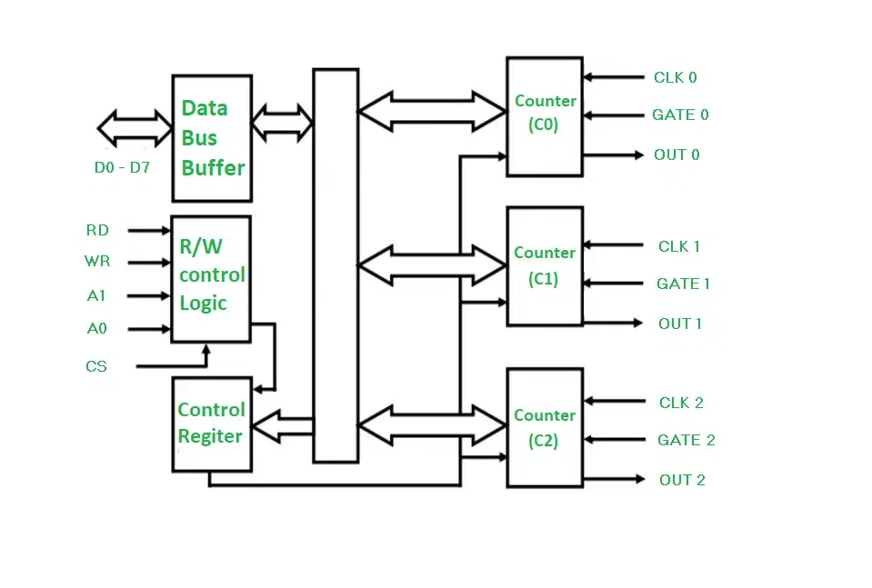
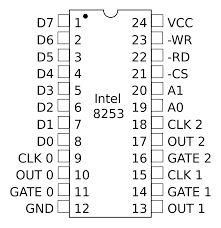
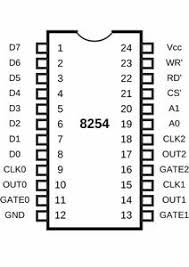

🔶 Introduction
Introduction to Intel 8253 and 8254
- 🕒 Intel 8253 and 8254 are Programmable Interval Timers (PITs) developed in the late 1970s.
- 🤝 Used with microprocessors like 8085 and 8086.
- 🎯 Functions include generating time delays, producing square waves, counting external events, and creating timing signals.
- ⚙️ Applications: Real-time clocks, event counters, baud rate generators, and interrupt generation.
- 🧩 They are programmable I/O peripheral devices, connected to the CPU via the system bus.
- 🔢 Each chip has three independent 16-bit counters, programmable in different modes.
- 🚀 The 8254 is an improved version of the 8253, supporting higher clock speeds and better read/write operations.
🔶 Difference Between 8253 and 8254
| Feature | 8253 | 8254 |
|---|---|---|
| Max Clock | 2.6 MHz | 10 MHz |
| Counter Size | 16-bit | 16-bit |
| Package | 24-pin DIP | 24-pin DIP |
| Compatibility | 8085, 8086 | 8086 (faster) |
| Added Features | – | Faster, enhanced |
🔶 Block Diagram of 8253/8254


📊 8253 vs 8254 Block Diagram Related Comparison
| Feature | 8253 | 8254 |
|---|---|---|
| Number of Counters | 3 Independent 16-bit Counters | 3 Independent 16-bit Counters |
| Data Bus Buffer | 8-bit bidirectional buffer | 8-bit bidirectional buffer |
| Control Word Register | 1 Common Control Word Register | Same as 8253 |
| Read-Back Command | Not available | Available (to latch count/status) |
| Operating Modes | 6 Modes (Mode 0–5) | Same 6 Modes |
| Input Clock Frequency Support | Up to ~2.6 MHz | Up to ~10 MHz |
| BCD Operation | Supported | Supported |
| Block Diagram Structure | 3 counters, control logic, data buffer | Same structure but improved internal logic |
🔶 Pin Diagram (24-Pin DIP)


📌 8253 vs 8254 Pin Description and Differences
| Pin No | Pin Name | Description | 8253 | 8254 |
|---|---|---|---|---|
| 1–8 | D0–D7 | 8-bit Bidirectional Data Bus | ✔ | ✔ |
| 22 | RD (Read) | Enables data from selected counter to data bus | ✔ | ✔ |
| 23 | WR (Write) | Loads control word or count into counter | ✔ | ✔ |
| 21 | CS (Chip Select) | Enables communication with CPU | ✔ | ✔ |
| 19, 20 | A0, A1 | Selects one of the counters or control register | ✔ | ✔ |
| 9, 15, 19 | CLK0, CLK1, CLK2 | Clock Input for each Counter | ✔ | ✔ |
| 11, 13, 17 | GATE0, GATE1, GATE2 | Enable/Trigger signal for counters | ✔ | ✔ |
| 10, 14, 18 | OUT0, OUT1, OUT2 | Outputs from each counter | ✔ | ✔ |
| 12 | GND | Ground | ✔ | ✔ |
| 24 | VCC | +5V Power Supply | ✔ | ✔ |
| (Internally) | Read-Back Command | Allows reading count and status without affecting operation | ❌ Not Available | ✅ Available |
🔶 Operating Modes (0-5)
| Mode | Name | Description |
|---|---|---|
| 0 | Interrupt on Terminal Count | Generates interrupt after count reaches 0 |
| 1 | One-Shot | Pulses on GATE trigger |
| 2 | Rate Generator | Used in baud rate generation |
| 3 | Square Wave Generator | Generates square wave |
| 4 | Software Triggered Strobe | Pulses once after count |
| 5 | Hardware Triggered Strobe | Triggered by GATE signal |
🔶 Applications of 8253 and 8254 Programmable Timers
⏲️ Time Delay Generation
Used to create delays in systems like LED blinkers, washing machines, or countdown timers.
Example: Delay between red and green light in a traffic signal.🔢 Event Counting
Counts external signals like button presses, machine rotations, or visitor entries.
Example: Counting the number of bottles on a conveyor belt.🔉 Waveform Generation
Generates square waves for buzzer sounds or speaker beeps using different frequencies.
Example: Producing a beep sound when pressing a button on a microwave.📡 Baud Rate Generation
Used in UART/serial communication to set data transmission speed between devices.
Example: Setting data rate in communication between Arduino and PC.⏰ Digital Clocks & Timers
Used to maintain real-time in clocks, alarms, or automatic timers.
Example: Digital wall clocks or time displays in railway stations.🔶 Sample Program
MOV AL, 36H
OUT 43H, AL
MOV AL, 0FFH
OUT 40H, AL
MOV AL, 0FFH
OUT 40H, AL
🔶 Conclusion
The 8253/8254 timer interface is essential in embedded systems. It provides precise timing, waveform control, and supports multiple operating modes useful in a variety of real-time applications.